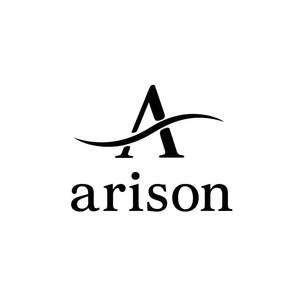

Trade Mark Journal No.2025/027 4 July 2025
UK00004223365 23 June 2025 (7,9)

- Class 7
- Hand-held vacuum cleaners; Cordless vacuum cleaners; Robotic vacuum cleaners; Electric vacuum cleaners; Vacuum cleaners; Vacuum pumps; Bags for electric vacuum cleaners; Vacuum cleaner bags; Hand held vacuum cleaners (Electric -) with disposable chambers; Hand held vacuum cleaners (Electric -); Vacuum bags; Electric vacuum cleaners for industrial use; Electric domestic vacuum cleaners; Wet vacuum cleaners; Car vacuum cleaners; Brushes for vacuum cleaners; Vacuum cleaners powered by rechargeable batteries; Vacuum cleaners for cars; Pressure vacuum pumps; Household vacuum cleaners; Dust filters for vacuum cleaners; Vacuum cleaning machines for use in households; Electrical vacuum cleaners for domestic use; Electric vacuum cleaners and their components; Dust filters and bags for vacuum cleaners; Grinders [hand-held power driven]; Electrically powered hand-held tools; Hand-held tools, other than hand-operated; Tools (Hand-held -), other than hand-operated; Hand-held tools, mechanically operated; Portable air tools; Vacuum cleaners for the cleaning of surfaces; Vacuum cleaners for household purposes; Air suction machines; Electric hand-held mixers for household purposes; Rotary steam presses, portable, for fabric.
- Class 9
- Power banks; Power adaptors; Electronic power supplies; Electrical power adaptors; Portable power chargers; Power adapters; Power units [batteries]; USB adapters; USB flash drives with micro USB connectors compatible with mobile phones; USB chargers; USB cables; Electric adapter cables; Plug adaptors; Electric adaptors; Adaptors (Electric -); Electrical adaptors; Smartphone battery chargers; Mobile phone battery chargers; Cell phone battery chargers; Battery chargers; Battery chargers for mobile phones; Wireless battery chargers; Chargers for cell phone; Battery chargers for tablet computers; Battery chargers for use with telephones; Chargers; Electric battery chargers; Chargers for mobile phones; Chargers for batteries; Chargers for smartphones; Portable chargers; Wireless chargers; Fast chargers for mobile devices; Chargers for mobile telephones; Batteries for mobile phones; Phone plugs; Batteries for phones; Battery charge devices; Battery cables; Wireless charging pads for smartphones; Mobile telephone batteries; Headphones for smart phones; Adapter connectors (Electric -); Software for mobile phones; Battery packs; Charging appliances for rechargeable equipment; Adapter plugs; Battery cases; Electric charging cables; Electric plug adapters; Connectors [electricity]; Jack plugs; Power supplies for smart phones; USB hubs; Luminous USB cables; Headphones; In-ear headphones; Earphones; Earbuds; Stereo headphones; Wireless headphones; Music headphones; Ear pads for headphones; Earphones for smartphones; Adapter cables for headphones; Two-way plugs for headphones; Cases for headphones; Noise cancelling headphones; Headsets; Headphone consoles; Wireless headsets; Wireless headsets for smartphones; Headsets for smartphones; Earphones for cellular telephones; Headsets for use with computers; Microphone plugs; Ear phones; Hi-fi stereo systems; Earphones for use with mobile telecommunication devices.
Jerry Aris